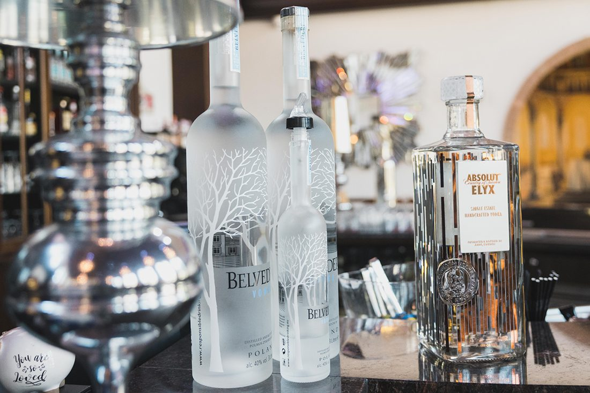
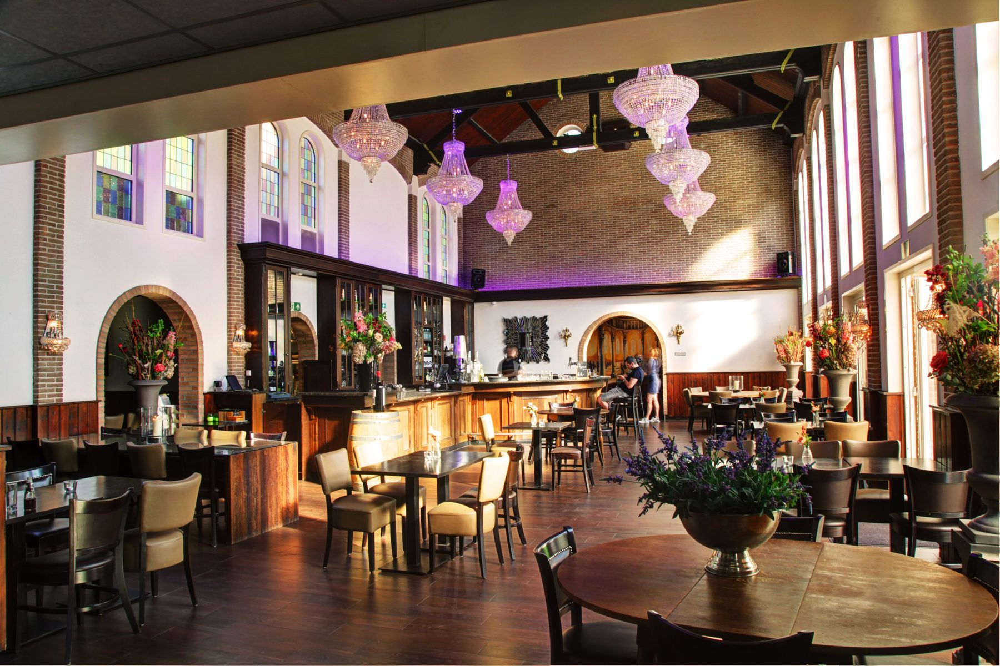
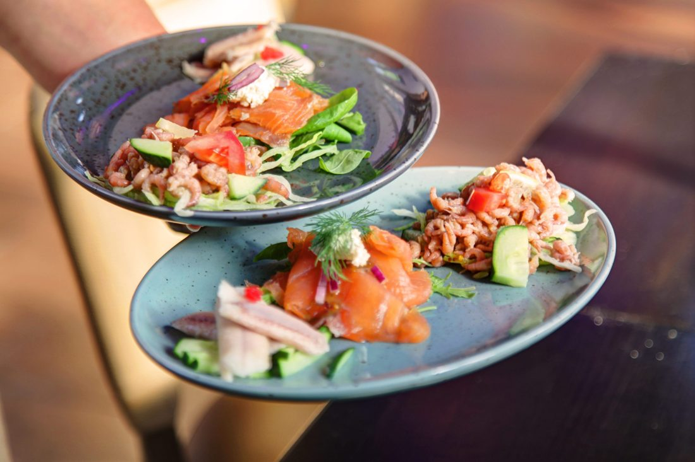
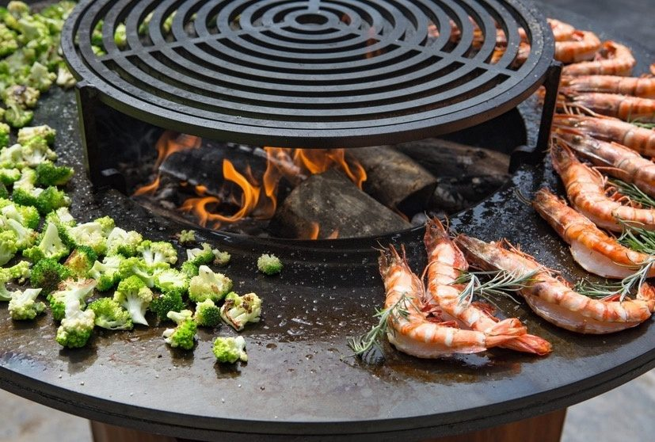
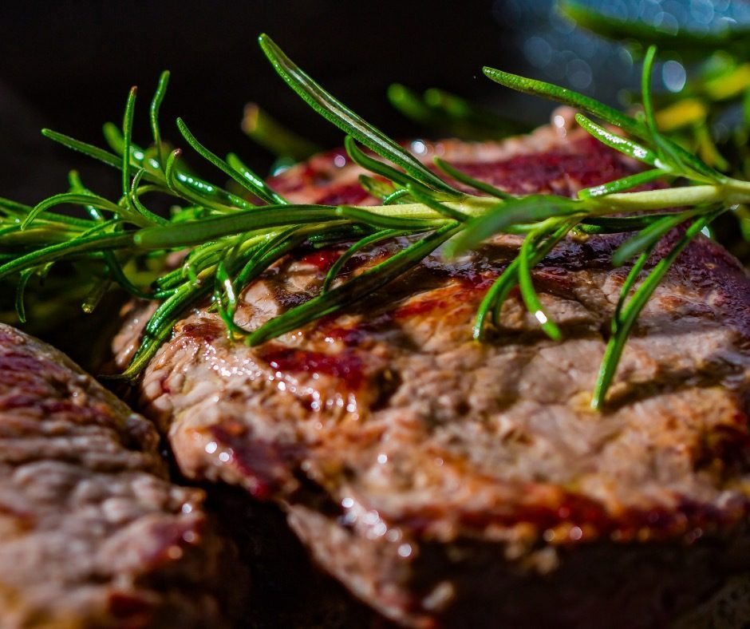
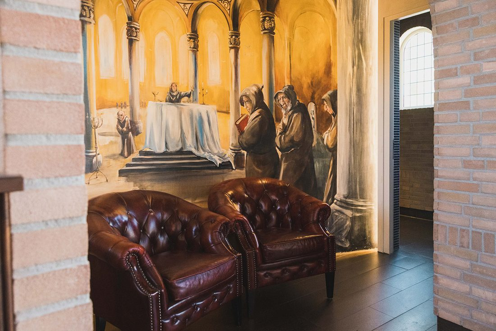

Zaal huren
Een feest in ons kloostergebouw, vanaf 80 personen.
€ 45 p.p.Meer info

Sinds 2014 zit onze brasserie in het voormalige klooster Stella Maris in Steenbergen. Lekker eten en drinken, met een juiste prijs-kwaliteitverhouding voorop.
Prachtige locatie met authentieke sfeer met elementen van het oude klooster.Albert van de Riet · Google
Kunt u niet kiezen? Laat u verrassen met een tafel vol lekkers, in 2 rondes.
Inclusief een glaasje prosecco, broodplankje met smeersels en amuse. U kiest zelf uw voor- en hoofdgerecht, zoals tournedos met truffeljus of hertenbiefstuk met stoofpeer. Als dessert een verrassing van de chef.
Voor grote en kleinere groepen. Bij een feest of evenement nemen we u alles uit handen en denken we mee in al uw wensen.

Een feest in ons kloostergebouw, vanaf 80 personen.

Een diner voor een grote groep in onze brasserie.

Samen rond onze OFYR BBQ, vanaf 20 personen.

Van hapjes tot compleet diner, op uw eigen locatie.

"Heerlijk eten en drinken, een juiste prijs-kwaliteitverhouding staat daarbij voorop."
Het klooster werd in 1959 gebouwd door de Assumptionisten, als noviciaat Stella Maris. Later kwam het in particuliere handen en sinds 2011 is het volledig verbouwd. In 2014 openden wij hier onze brasserie.
In het restaurant zie je nog steeds veel details van het voormalige klooster terug. U bent altijd welkom om even rond te kijken, tijdens het diner of gewoon bij een drankje.
★★★★★"Een hele gezellige en uitstekende horecagelegenheid voor een overheerlijk maaltijd. Groot assortiment. Bierkeuze is gigantisch. Vriendelijk, deskundig en behulpzaam personeel met veel aandacht voor de gasten. Je wordt in de watten gelegd. Ruime parkeergelegenheid die ook nog eens gratis is. Geschikt voor alle soorten feesten en evenementen. Een absolute aanrader!"
★★★★★"Prachtige locatie met authentieke sfeer met elementen van het oude klooster."
★★★★☆"Heerlijk gegeten, mooie locatie, mooie prijzen."
Reserveren kan telefonisch, via WhatsApp of per mail. Met 10 personen of meer kunt u ook buiten onze openingstijden reserveren.
Voor vanavond nog een tafel? Bel ons, dan laten we direct weten of er plek is.
Wij zoeken jou! Vind je het leuk om in de bediening of bij de catering te werken, naast je studie? Mail naar info@brasseriestellamaris.nl.